데스크톱 앱 설정의 ToggleRow·SelectRow·ResourceRow는 description을 받지만 그리지 않습니다. 이 문서는 실제 설정 화면(SettingsView)에 임시로 그리게 한 모습 두 가지를 같은 화면에서 비교합니다. 앱 소스는 건드리지 않았고, 번들 단계에서 행 부품만 바꿔 끼운 사본으로 찍었습니다. 모든 캡처는 영어·한국어, 어두운·밝은 테마, 데스크톱(창 1100px 안의 설정 창 980px)과 폰(420px, data-mixdog-mobile-tabs) 기준입니다.
이 저장소의 기록상 “설명 그리기를 없앤 커밋”은 없습니다. 가장 오래된 데스크톱 설정 코드(c3d4fe071, 2026-08-04 “mixdog 0.9.92 – clean baseline”, 이력을 한 번 압축한 커밋)에 이미 description: _description으로 받아서 버리는 코드가 들어 있습니다. 즉 그리기가 빠진 시점은 압축 이전이라 커밋 메시지로는 복원할 수 없습니다.
그래도 의도가 아니라고 보는 근거
.mixdog-settings__description, .settings-form-row small, .settings-resource p, 행 안쪽 .mixdog-settings__copy의 세로 간격(gap: 8px), 모바일의 .settings-resource p { overflow-wrap: anywhere }. 지금도 .settings-form-row small·.settings-resource p는 남아 있고, .mixdog-settings__description은 2026-09-29(f5dbdcac6)의 큰 정리에서 “쓰는 곳 없는 규칙”으로 지워졌습니다. 그릴 곳이 사라진 뒤에 스타일만 청소된 흔적입니다.8bbe72f4b(“지침 파일”)이 202자짜리 신뢰 경고 문구를 11개 언어로 번역해 넣었지만 화면에는 나오지 않습니다. 쓰는 사람이 보인다고 믿고 쓴 것입니다.description 속성은 다른 부품에서는 그려집니다: Group(그룹 머리글 아래 한 줄), 확장 영역의 ExtensionRow·ExtensionItemRow·ExtensionSection, 연결 대화상자 ConnDialog. 특히 .extensions-item-copy > small은 13px / 16px / 흐린 글자 / 2줄 말줄임으로 이 문서의 A안과 같은 모양입니다.display: none으로 숨기고 대신 툴팁·상세 카드를 씁니다(extension-list.css, f15f3c6ad, “왼쪽 아이템들 답답하다”). 설정 창 행에 대한 결정은 아닙니다.design/ 의 어떤 파일도 설정 행의 설명 위치를 정의하지 않습니다.한계: 압축 이전 이력(v0.9.20 등)에는 apps/desktop/src/renderer가 없어 “원래 그려졌는지”를 커밋으로 직접 증명할 수는 없습니다. 위 정황 증거로 미완성/누락으로 판단합니다.
설정 창에서 설명을 받고도 버리는 호출은 정적으로 17곳입니다(ToggleRow 5, SelectRow 1, ResourceRow 11, 그중 일부는 데이터에서 오는 값이라 실제 행 수는 더 많음). 반대로 Group 머리글 설명(전원, 알림, 사용 한도, 개발자 섹션 등)은 이미 보입니다. 아래 표는 모의 데이터로 실제 화면을 띄워 센 값입니다(행 = 한 줄짜리 설정 항목, 확장·MCP·플러그인·스킬은 이미 설명을 그리므로 제외).
| 페이지 | 행 수 | 설명이 있는 행 | 그룹 머리글 설명(이미 보임) | 가장 긴 설명(자) | 가장 긴 예시 (en) |
|---|---|---|---|---|---|
| 일반 · General | 11 | 3 | 1 | 202 | Automatically include AGENTS.md / CLAUDE.md rules from your home folder and the project folder in new sessions. Enabled files are trusted as instructions, so only enable this for repositories you trust. |
| 컨텍스트 · Context | 4 | 2 | 0 | 115 | Clear idle sessions after 1h 0m 0s (anthropic default). A provider idle window below overrides the global duration. |
| 프로바이더 · Providers | 5 | 3 | 1 | 18 | OPENROUTER_API_KEY ko: 번역 없음 (런타임이 주는 문구) |
| 출력 스타일 · Output style | 5 | 4 | 0 | 55 | Final decision or direct answer in one or two sentences ko: 번역 없음 (런타임이 주는 문구) |
| 시스템 · System | 7 | 2 | 1 | 67 | Check the runtime, providers, integrations, and local installation. |
| 개발자 옵션 · Developer options | 3 | 3 | 1 | 66 | Show Antigravity (Gemini) OAuth in Providers and the model picker. ko: 번역 없음 (런타임이 주는 문구) |
| 정보 · About | 4 | 4 | 0 | 61 | Source, releases, and discussions — a star helps mixdog grow. |
| 단축키 · Shortcuts | 행 설명 없음 (키 표) | ||||
| 연결 · Connection | 행 설명 없음 (전용 conn-row 레이아웃. 휴대폰 앱의 “PC 전환” 한 곳만 ResourceRow 설명이 있음) | ||||
번역 문제 두 가지: ① 개발자 옵션 설명(Show Cursor OAuth in Providers…)은 런타임이 주는 문장이라 11개 언어 카탈로그에 한 줄도 없습니다. ② 출력 스타일 설명(Concise summary with…)은 마크다운 머리글에서 오므로 마찬가지로 영어로만 나옵니다. 설명을 그리기 시작하면 한국어 화면에 영어 문장이 섞여 보입니다. 또 ChoicePanel은 entry.description || entry.source, 프로바이더 행은 provider.detail || provider.envName을 넘기므로 설명이 비면 builtin, OPENAI_API_KEY 같은 내부 값이 보조 문구로 나옵니다.
아래는 실제 토큰 값(--mx-*, 두 테마에서 읽은 값)으로 다시 그린 견본입니다. B의 ⓘ는 마우스를 올리거나 Tab으로 가져가면 설명이 열립니다. 폰 폭에서는 hover가 없으므로 탭으로 열어야 한다는 점이 B의 약점입니다.
관찰: ① 한 줄/두 줄 설명 모두 기존 행 최소 높이(min-height: 56px + 위아래 12px) 안에 들어가므로 A를 켜도 페이지 길이가 늘지 않습니다(실측: 일반·컨텍스트·프로바이더·출력 스타일·개발자·정보 0px, 시스템 +4px). ② 202자짜리 “지침 파일” 문구는 2줄 말줄임에서 “신뢰하는 저장소에서만 사용하세요”라는 경고가 잘립니다(“A 줄임 없음”으로 비교). ③ 스위치 행도 값 칸이 280px를 차지해(스위치는 32px뿐) 설명이 행 폭 618px의 절반 남짓(≈320px)에서 접힙니다.
각 페이지마다 데스크톱 A | 데스크톱 B(가장 긴 설명의 ⓘ를 hover) | 폰 A | 폰 B. 영어·어두움에는 현재 모습(설명 없음)도 함께 있습니다. 이미지를 누르면 원본 크기로 열립니다.
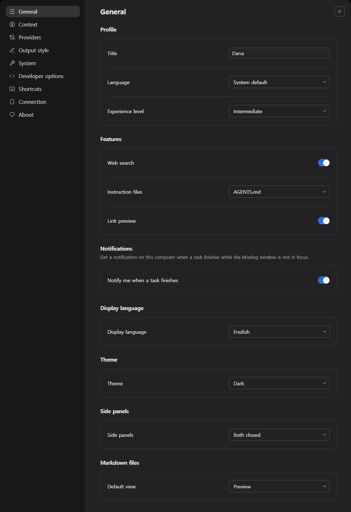
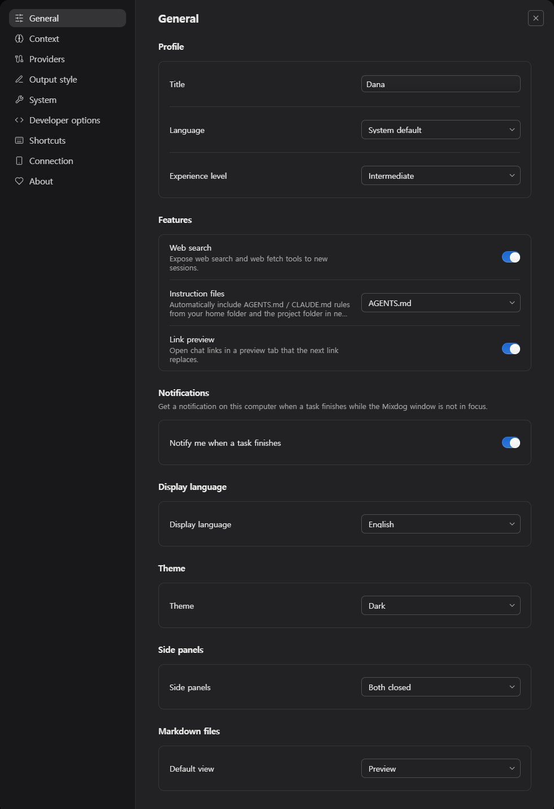
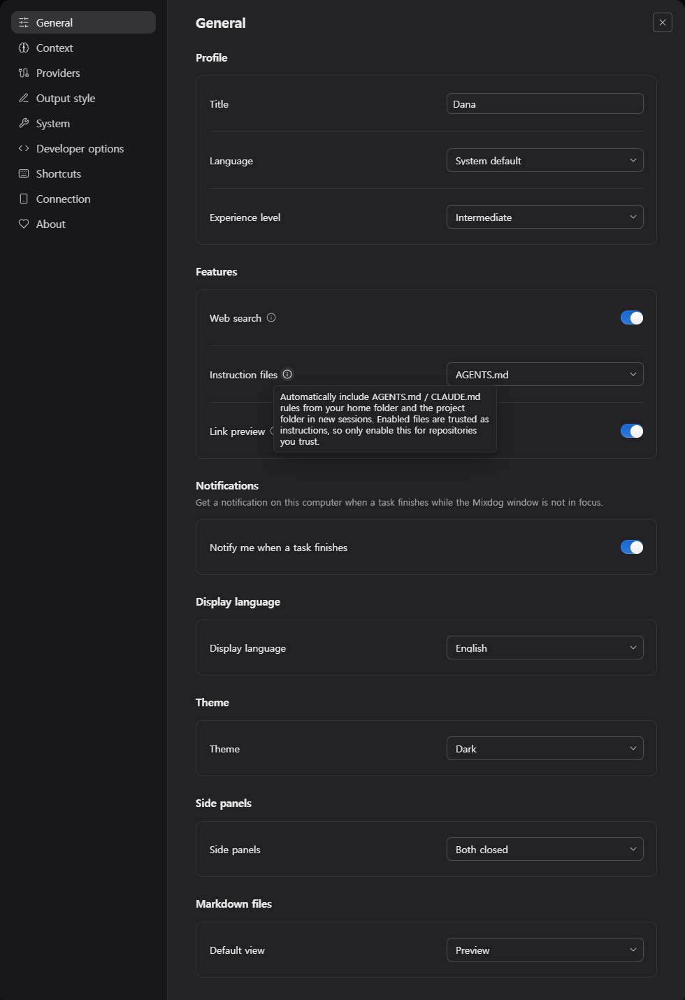
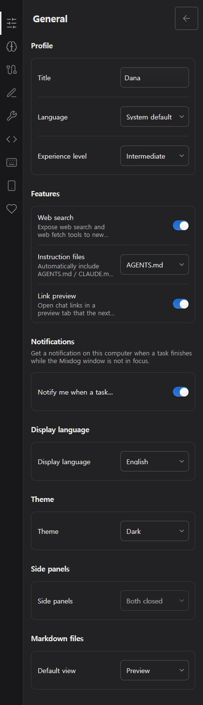
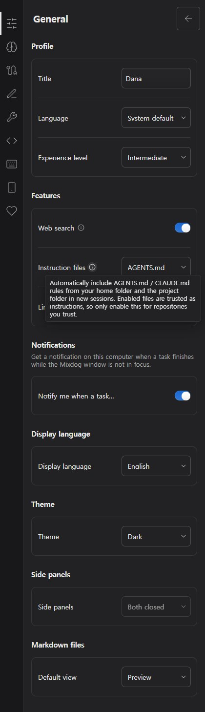
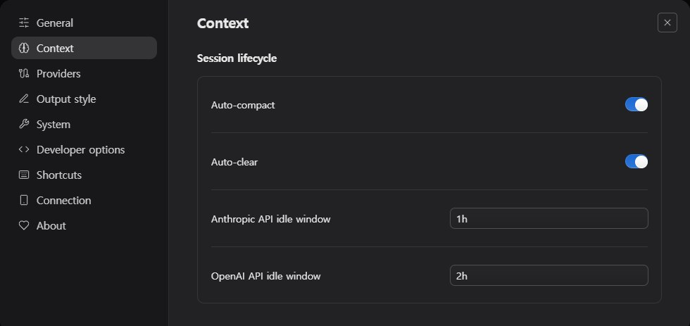
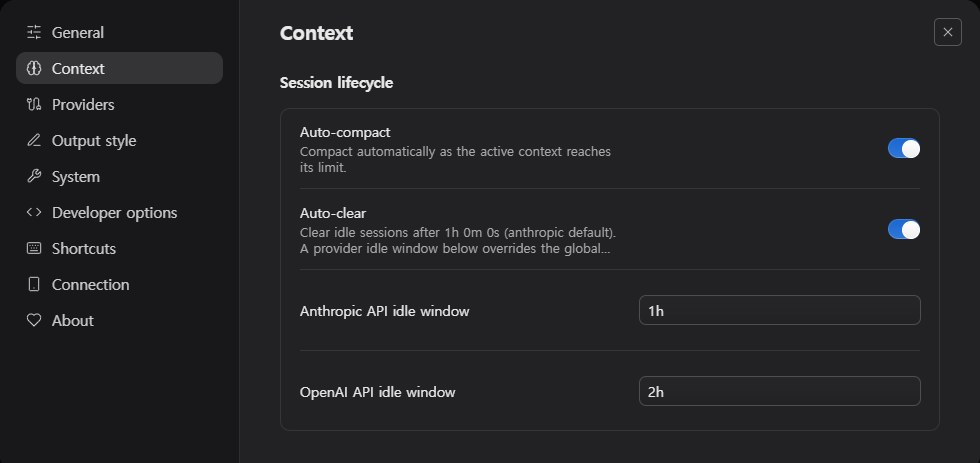
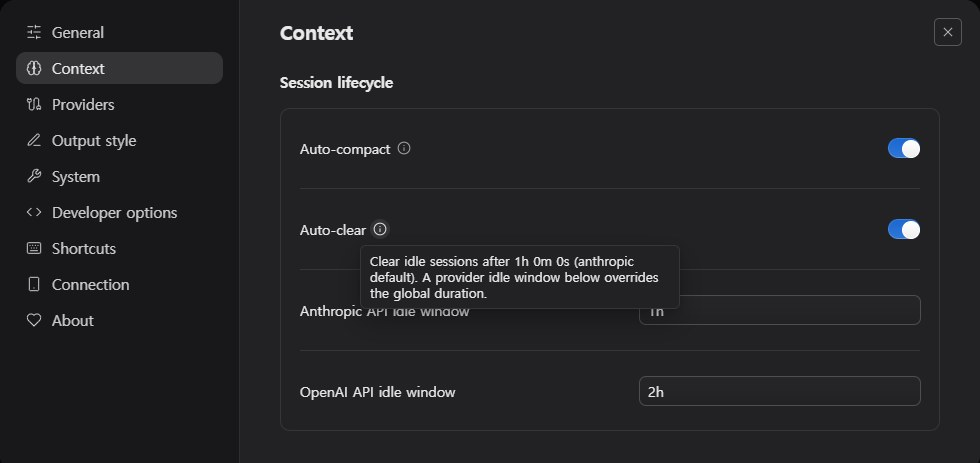
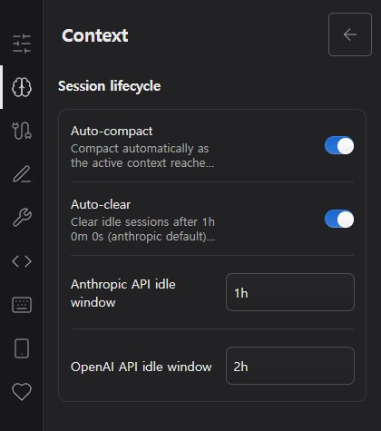
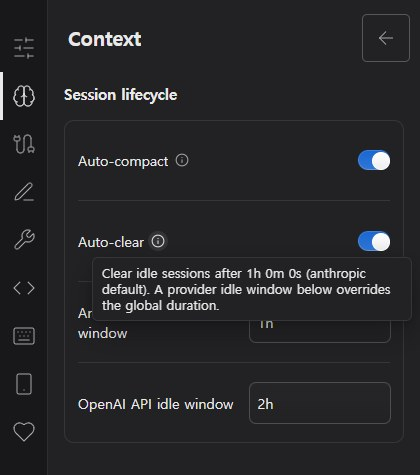
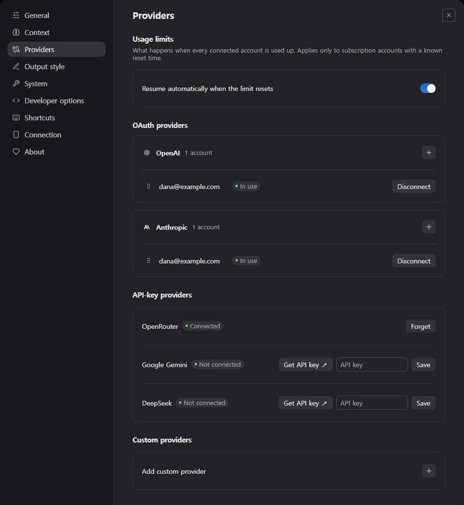
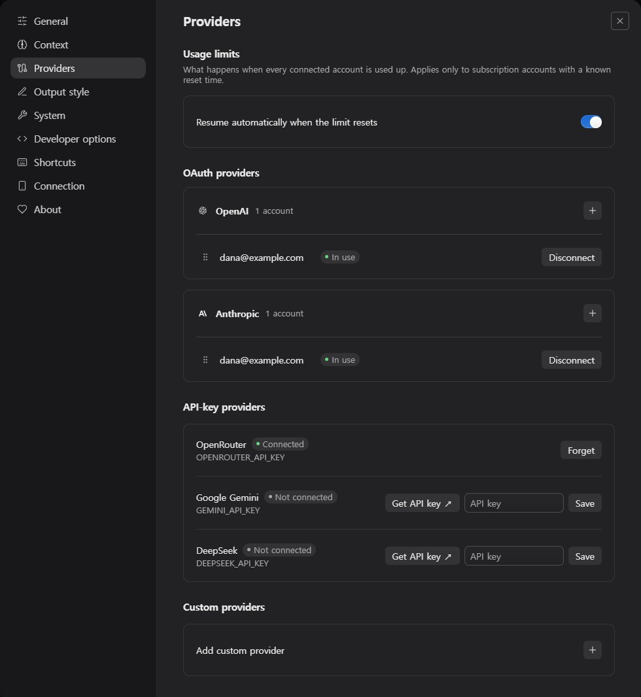
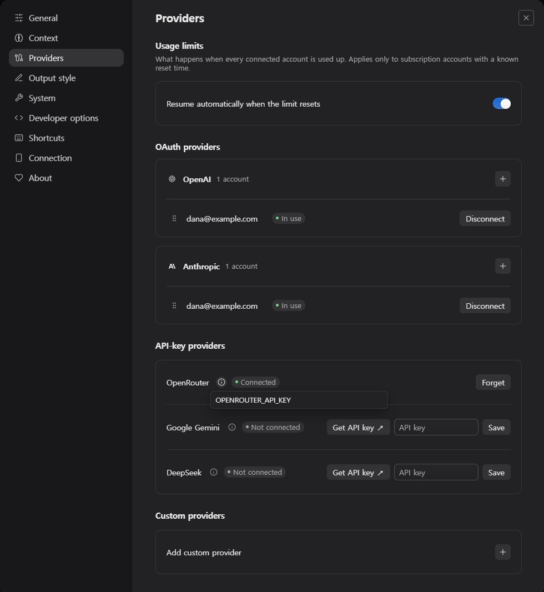
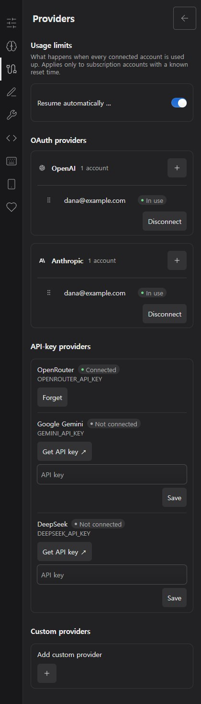
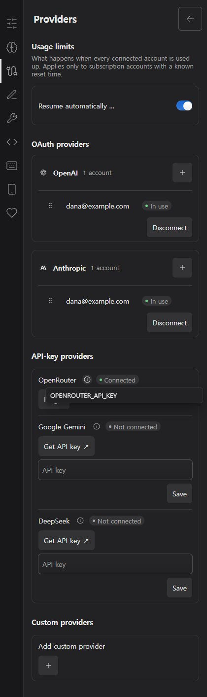
A안(설명 한 줄 보조 문구)을 기본으로 합니다. 이유: 앱에 이미 같은 모양의 선례(.extensions-item-copy > small)가 있고, 폰에서도 hover 없이 읽히며, 페이지 길이가 늘지 않고, 경고성 문구가 숨지 않습니다. B(ⓘ)는 호버/포커스에만 보이므로 번역해 둔 설명이 사실상 다시 사라지고, 폰에서는 24px 안팎의 작은 대상을 눌러야 합니다. 프로바이더 환경변수 이름처럼 “있어도 되고 없어도 되는” 부가 정보에만 B를 보조로 쓸 수 있습니다.
| 항목 | 값 |
|---|---|
| 글자 | font-size: var(--mx-font-meta) (13px) · line-height: var(--mx-line-meta) (16px) · font-weight: var(--mx-weight-regular) · color: var(--mx-text-muted) — .extensions-item-copy > small, .settings-group > header p와 동일 |
| 간격 | 제목(20px 줄, --mx-line-ui)과 설명 사이 2px. 이를 위해 설명이 있는 .mixdog-settings__copy만 gap: 0 + 설명 margin-top: 2px (지금 gap: 8px은 너무 벌어짐). 행 패딩 12px, min-height: 56px은 그대로 → 2줄 설명 행 = 12 + 20 + 2 + 32 + 12 = 78px, 1줄 = 62px |
| 정렬 | 그리드 align-items: center 유지: 오른쪽 컨트롤은 제목+설명 블록 전체의 세로 중앙에 옵니다(캡처 확인). 제목 한 줄 말줄임은 그대로, 설명만 줄바꿈 |
| 줄 수 | -webkit-line-clamp: 2, overflow-wrap: anywhere, min-width: 0. 폰(420px)에서도 2줄이면 대부분 들어갑니다 |
| 폭 | 스위치 행은 값 칸을 auto로(grid-template-columns: minmax(0,1fr) auto) 해서 설명이 행 폭의 대부분(≈570px)을 쓰게 합니다. 선택·입력 행은 현재 160–280px 유지 |
| 접근성 | 설명 노드에 id를 주고 스위치 input/OpenSelect에 aria-describedby 연결(지금은 스크린리더에도 설명이 전달되지 않음). 말줄임은 시각 효과일 뿐 DOM에는 전문을 둡니다 |
| 아주 긴 설명 | ① 작성 기준: 영어 ≈ 110자 이내(2줄). “지침 파일”처럼 경고가 필요하면 description(요지, 2줄)과 경고는 별도 줄(말줄임 없음, 경고색 대신 기본 muted)로 나눕니다. ② 말줄임이 생기면 title 속성으로 전문을 보여 줍니다(데스크톱), 폰은 줄임 없이 3줄까지 허용하는 것도 대안. ③ 번역이 길어지는 언어(de/ru/vi)는 같은 규칙으로 2줄에서 자르되 영어 기준 길이 점검(i18n 점검 스크립트)을 둡니다 |
| 데이터에서 오는 설명 | 개발자 옵션·출력 스타일 설명은 번역 카탈로그가 없습니다. 그리기 전에 키를 카탈로그에 넣거나(i18n:sync) 번역이 없으면 숨기는 규칙이 필요합니다. entry.source, provider.envName 같은 대체 값은 설명으로 쓰지 않습니다 |
| ResourceRow | 설명과 meta가 같이 있으면(시스템 → 현재 버전) 설명 → meta 순서. meta는 지금처럼 한 줄 말줄임 유지. 컨텍스트 상태의 cwd 경로 설명은 중간 말줄임이 더 적합 |
구현 위치(이번엔 수정하지 않음): capability-controls.tsx의 ToggleRow·SelectRow·ResourceRow에서 description을 받아 .mixdog-settings__copy 안 제목 아래에 한 번만 그리면 됩니다. 새 CSS는 17-settings.css의 .settings-form-row small/.settings-resource p 규칙 옆에 한 클래스(예: .mixdog-settings__description)로 둡니다.